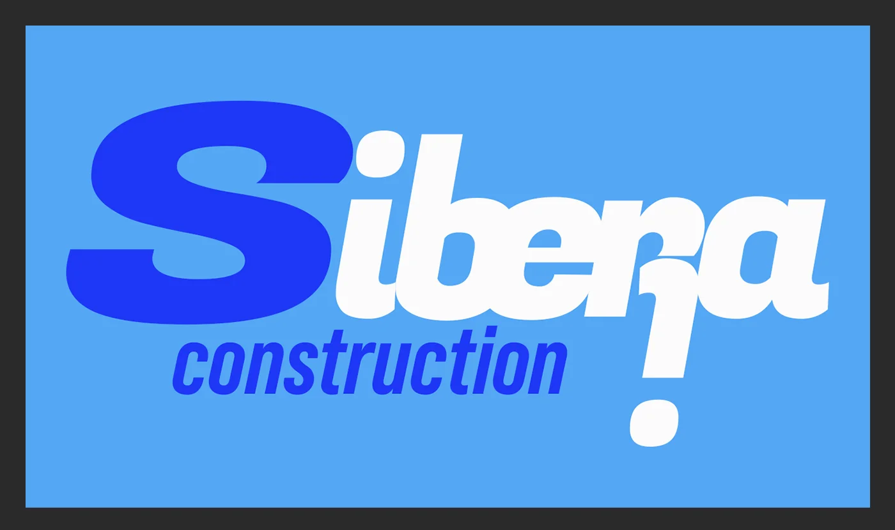
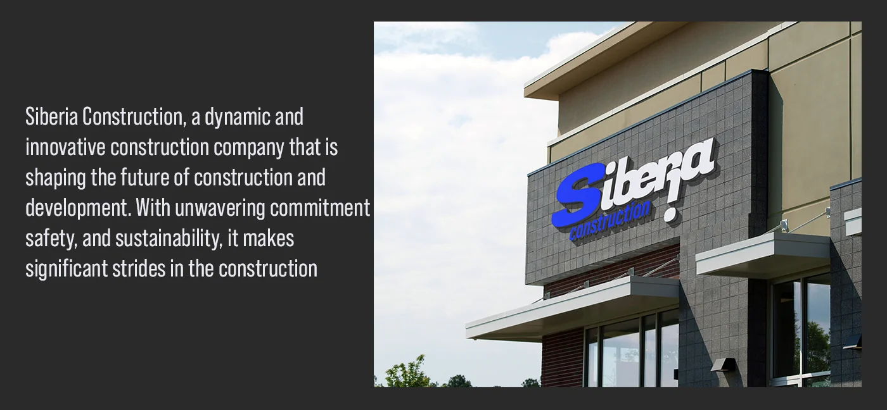
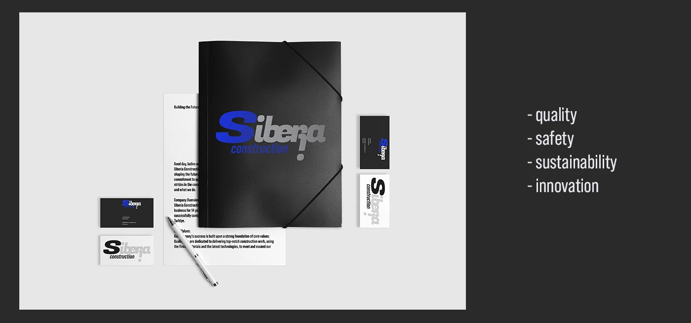
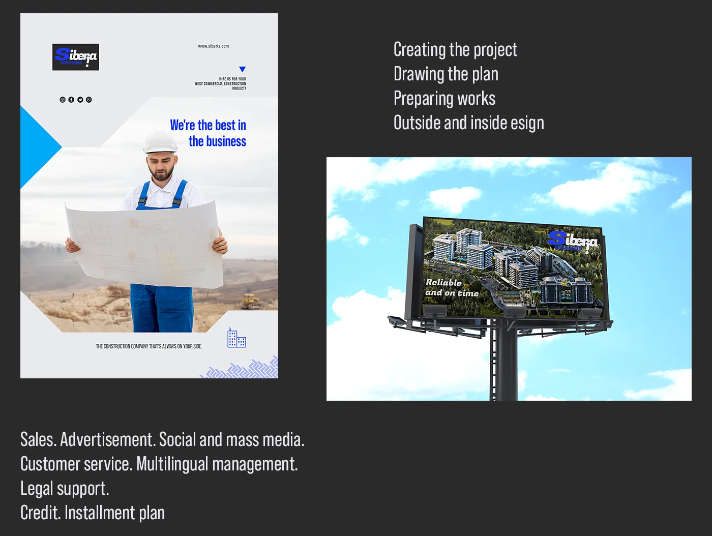
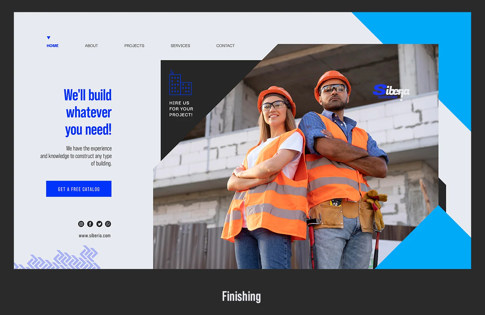

Айдентика · Брендбук
Фирменный стиль для динамичной строительной компании. Логотип, цветовая система, типографика, носители — и кейс, объясняющий почему синий цвет ведёт взгляд от земли к небу.
Платформа бренда
Прежде чем рисовать логотип — нужно понять, что компания хочет транслировать. Это фундамент, из которого растёт вся визуальная система.
Quality
Качество как обязательство, а не маркетинговый тезис. Каждый элемент айдентики должен быть безупречен.
Safety
Безопасность — главная ценность строительного бизнеса. Визуально: устойчивость, чёткость, надёжность форм.
Sustainability
Устойчивое развитие и долгосрочный взгляд. Не строим быстро — строим надолго.
Innovation
Движение вперёд. Именно поэтому логотип динамичный, с наклоном — а не статичный и консервативный.
Задача
Siberia Construction — динамичная строительная компания, которая хотела заявить о себе как об инновационном игроке рынка. Существующий образ отсутствовал вообще — компания работала без фирменного стиля, что на B2B-рынке строительства сразу считывается как недостаток доверия.
Задача: создать айдентику, которая передаёт силу и движение — и при этом работает на всех носителях строительной компании: от фасадной вывески до спецодежды, от визитки до билборда на стройплощадке.
Дополнительная сложность: компания работает на международных рынках, поэтому всё — логотип, брендбук, кейс — делалось на английском языке.
Used colors mean the way of the building — from the ground to the sky
Логика цветовой системы Siberia Construction: от тёмного к светлому, как здание растёт вверх
Брейншторм
Строительные компании в большинстве своём выглядят одинаково: жёлтый или оранжевый цвет, квадратная рамка, шрифт без характера. Жёлтый — это бытовые ассоциации с краской и каской, оранжевый — дорожные работы. Хотелось выйти из этого ряда.
Изучил международные строительные бренды, которые позиционируют себя как премиальные: Skanska, Bechtel, Vinci. Все они используют синий. Синий в строительстве — это не банковская надёжность, это небо как горизонт возможностей.
Отказ от жёлтого
Жёлтый и оранжевый — визуальный стандарт строительного рынка. Использовать их значит раствориться среди конкурентов. Синий на этом фоне — смелый, дифференцирующий выбор.
Метафора роста
Градация синего — от тёмного (#0D1B2E) к светлому (#4DA3FF) — буквально описывает строительство: от фундамента в земле до фасада, открытого небу. Цвет рассказывает историю без слов.
Динамика в логотипе
Буква S с наклоном, курсивное начертание, восклицательный знак как финальный акцент — всё это создаёт ощущение движения. Строительство — это не стоять, это двигаться вперёд.
Три версии логотипа
Основная (полноцветная на синем), контрастная (синяя на белом), монохромная (белая на тёмном). Строительная компания работает на разных носителях — логотип должен читаться на бетоне, спецодежде и экране.
Логотип

Доминирующая буква S
S — инициал, который несёт двойной смысл: Siberia и Steel (сталь). Размер в логотипе намеренно больше остальных букв — компания уверена в себе, не прячется.
Курсивный наклон — движение
Наклон шрифта создаёт эффект движения вперёд. Строительная компания строит будущее — логотип это визуально подтверждает. Статичный прямой шрифт здесь был бы неуместен.
Восклицательный знак как подпись
Восклицательный знак в конце «construction!» — это характер. Не просто строительная компания, а та, которая делает это с энергией. Нетипичный приём для консервативной индустрии, который запоминается.
Шрифты: Belop Family + Fogaz One
Belop Family — основной текстовый шрифт, читаемый и нейтральный. Fogaz One — логотипный шрифт с характером, угловатый и уверенный. Две роли, два инструмента.
Цвет
Четыре оттенка синего — от почти чёрного до небесного. Это не просто палитра, это история строительства: тёмный фундамент уходит в землю, светлый фасад смотрит в небо. Каждый цвет занимает своё место в иерархии носителей.
Ground
#0D1B2E
Фундамент · фон · тёмные носители
Steel Blue
#1A63D8
Основной · логотип · акцент
Sky
#4DA3FF
Светлый акцент · буква S · детали
White
#FFFFFF
Текст · обратная версия
Типографика
Принцип тот же что и у любого сильного бренда: один шрифт с характером для знака, один нейтральный для текстов. Но в строительстве важна ещё и техническая читаемость — шрифт должен работать на стройплощадке, а не только на экране.
Fogaz One — логотип
Характерный display-шрифт с угловатостью и энергией. Курсивное начертание подчёркивает движение. Используется исключительно в логотипе — это его личный шрифт.
Только логотип · display
Belop Family — всё остальное
Геометрический гротеск с высокой читаемостью при любом размере. Работает на бланке, в презентации, на вывеске. Несколько начертаний позволяют строить чёткую типографическую иерархию.
Заголовки · подписи · текст
Применение
Строительная компания — это специфика носителей. Здесь важны не только бумажные носители, но и то, как логотип выглядит на фасаде здания, на технике, на спецодежде рабочих и на билборде у стройки. Каждая версия логотипа заточена под свой контекст.



Процесс
В отличие от проектов с бытовой аудиторией — ресторанов, личных брендов — строительный бренд обязан работать в жёстких условиях: яркий солнечный свет на фасаде, грязь и пыль на технике, мелкий размер на документах. Это определяло каждое дизайн-решение.
Процесс начался не с визуала, а с позиционирования: кто конкуренты, как они выглядят, где пустое пространство. Жёлто-оранжевый сегмент рынка занят — синий свободен. Это был первый и ключевой выбор.
Дальше — логотип тестировался не на белом листе, а сразу на реальных носителях: фасад здания, билборд, спецодежда. Логотип, который выглядит хорошо в Illustrator, может провалиться на бетоне. Здесь он прошёл все тесты.

Итог
Полная визуальная система для строительной компании с международными амбициями: логотип в трёх версиях, цветовая палитра с концептуальной логикой, типографическая пара, шесть категорий носителей.
Главный результат — бренд, который выделяется в консервативной индустрии без потери доверия. Синий дифференцирует, динамичный логотип передаёт энергию, четыре ценности дают платформу для дальнейшей коммуникации.
Кейс оформлен на английском — компания может использовать его для презентации международным партнёрам и инвесторам без адаптации.